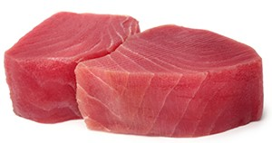

ScombrotoxismePierre, 50 ans, vous consulte car il a été victime d'un malaise la veille. Il lui restait un steak de thon du réveillon, et il l'a consommé à peine cuit pour son dîner, après un simple aller-retour à la poêle. Quelques minutes après, il s'est senti très faible, son visage était rouge vif et il est allé s'allonger sur son lit sans pouvoir appeler de secours car il était seul. Il s'est réveillé le lendemain sans aucun symptôme. Que lui est-il arrivé ?

Voir la réponse Tox'In, la Base VIDAL dédiée aux Produits Toxiques. |